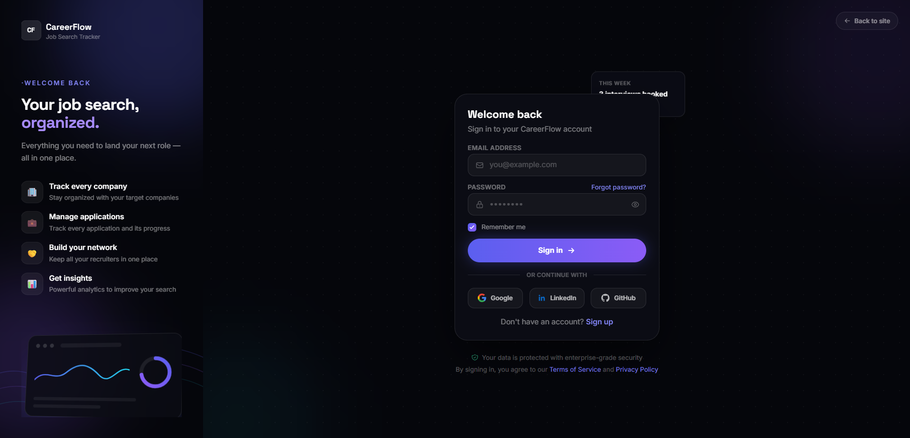
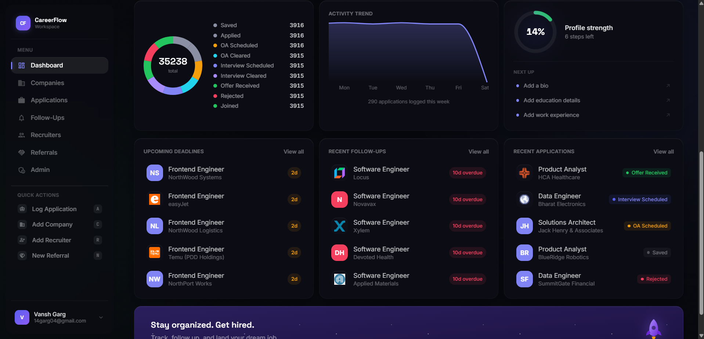
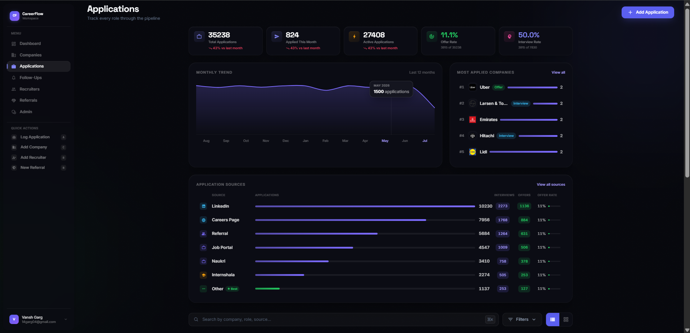
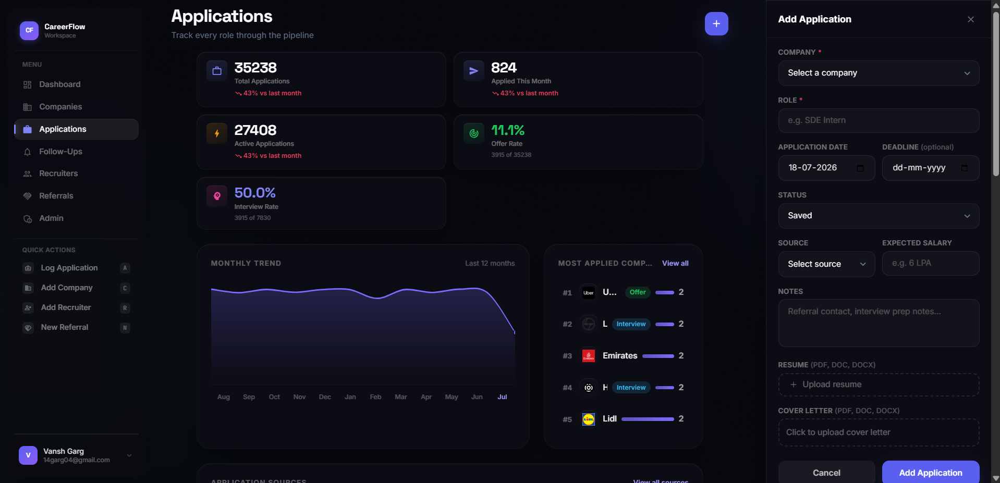
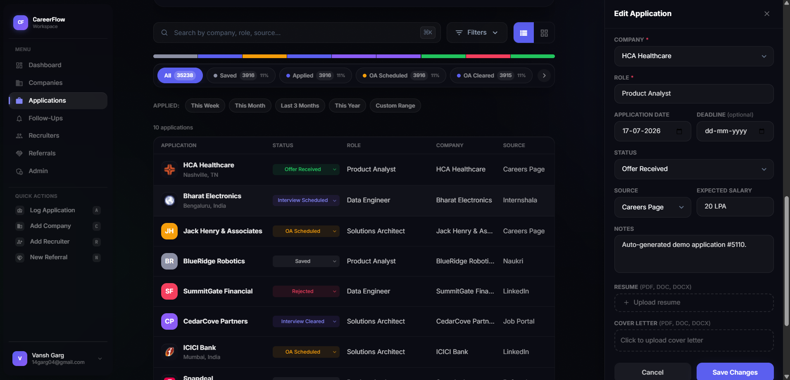
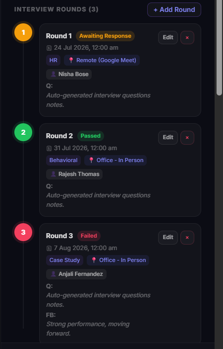
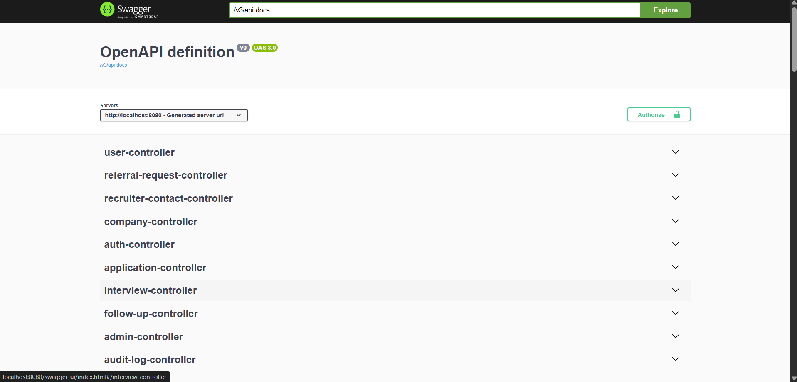
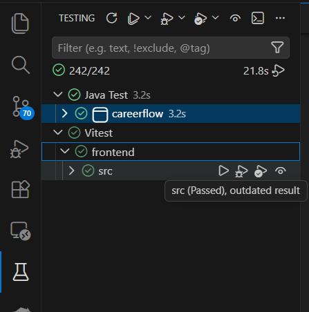
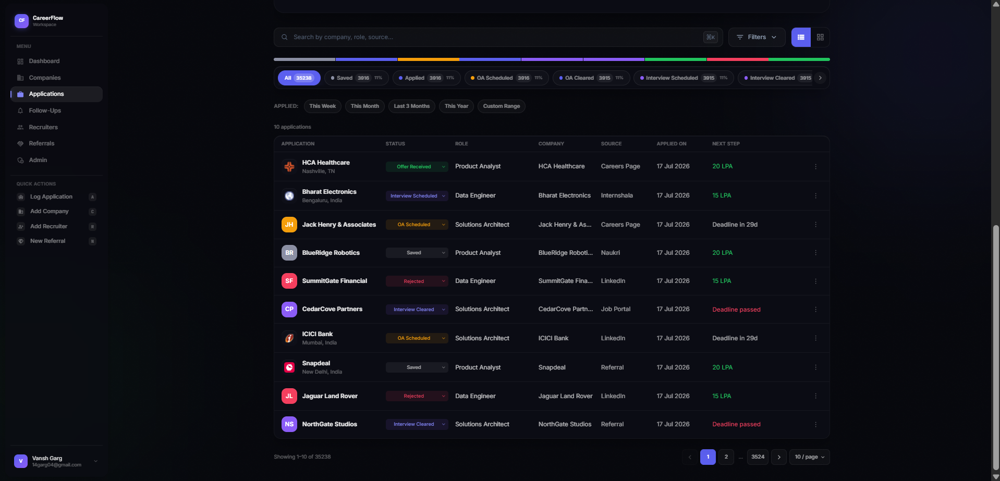
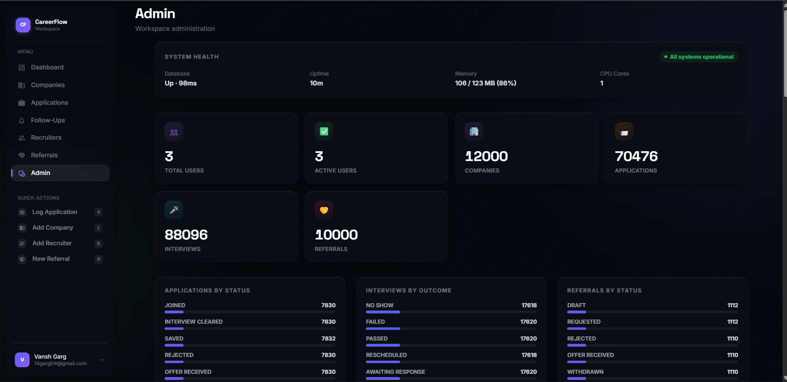

CareerFlow
A smart job application tracking platform — a 60+ endpoint REST API across 10 backend modules over a normalized 15-entity PostgreSQL schema, secured with JWT and Google OAuth2, covered by ~200 automated tests, with a React dashboard managing 130,000+ records — 35,000+ applications across 6,000+ companies, plus ~44,000 interviews and ~35,000 follow-ups — over the normalized 15-entity schema.

Overview
CareerFlow is a job search command center that tracks companies, applications, interview rounds, recruiters, referrals, and follow-ups in one dashboard instead of scattering them across spreadsheets and email threads. It's built as a real backend-heavy system — a 60+ endpoint REST API (63 routes across 10 controllers) over a normalized 15-entity PostgreSQL schema — with a React frontend managing 130,000+ records, ~200 automated tests, and self-documenting Swagger/OpenAPI docs.


The Challenge
A job search tracker touches a lot of interrelated entities — companies, applications, interview rounds, recruiters, referrals, and follow-ups — all of which reference each other and change state over time. Modeling that as a normalized relational schema, rather than a flat "one big table," while still keeping the API surface manageable (not one endpoint per entity relationship) was the core design problem. On top of that, the platform needed real authentication and authorization — an admin console and regular users had to be genuinely separated, not just hidden in the UI. Authentication itself had to support two flows — classic email/password and Google OAuth2 — sharing one user model, and every state change across the platform needed to be auditable after the fact.
The Engineering
The backend is built on Spring Boot 3 with a 15-entity normalized PostgreSQL schema. Records are never destructively removed — a shared soft-delete base entity marks them inactive, preserving history for the dashboards. History is modeled, not just flagged: referral status changes keep a dedicated status-history trail, and recruiter contacts carry timestamped notes. Fourteen domain enums (application status and source, interview type and outcome, follow-up status and buckets, recruiter and referral states, audit actions, auth provider, roles) turn each workflow into an explicit state machine.
Security runs through Spring Security with two authentication paths: email/password with BCrypt hashing, and Google OAuth2 with custom success/failure handlers, both issuing 24-hour JWTs. Logout blacklists the token in the database, and an hourly scheduled job purges expired tokens. The full password lifecycle is implemented — forgot-password emails a reset link with a 15-minute token (and never reveals whether an email exists), plus reset and authenticated change-password flows. Role-based access control is enforced at the API layer: the entire admin module and even Actuator endpoints require the ADMIN role.
The 63 endpoints share common infrastructure: reusable pagination and sorting helpers with a generic page-response envelope, a global exception handler with typed exceptions returning consistent field-level validation errors, and strict input validation (phone/LinkedIn/GitHub regexes, cross-field rules like "end date required unless currently working"). Profile updates return a field-level diff of what changed. Every significant action — CRUD across applications, companies, interviews, and referrals, plus logins, registrations, and password changes — is recorded as a typed audit-log entry with its own query API. Documents (resume, cover letter) upload via multipart with a 10MB cap and owner-only downloads. The whole API is self-documenting via Swagger/OpenAPI.





The backend carries 192 tests across 32 classes (JUnit 5 + Mockito) covering every controller and service plus JWT utilities, OAuth2 handlers, file storage, and the exception handler — running against in-memory H2 so no external database is needed. The frontend adds Vitest coverage for the auth flows. The backend ships as a multi-stage Docker build (Maven build stage → slim JRE-17 runtime) deployed to Render, with the React frontend on Vercel — either side redeploys without touching the other, and a scheduled GitHub Actions workflow keeps the Render instance warm.

System Architecture
Request flow from the React client through auth to the relational data layer.
Tech Stack
Key Features
- 60+ endpoint REST API
10 modules over a normalized 15-entity schema with soft deletes, status-history trails, and shared pagination/sorting/error-handling infrastructure.
- Dual authentication
JWT + Google OAuth2, BCrypt hashing, database token blacklisting with scheduled cleanup, and a full email-based password-reset flow.
- Role-based admin console
User and role management, activation/deactivation, platform stats, activity summaries, and system-health monitoring, separated at the API layer.
- Audit logging
19+ typed actions recorded platform-wide with a queryable log API feeding the admin console.
- Recharts analytics
Weekly/monthly application trends, source breakdown, per-company counts, and upcoming deadlines computed as real backend aggregates.
- Multipart document handling
Resume and cover-letter upload with validation and owner-only authenticated downloads.
- ~200 automated tests
192 JUnit 5 + Mockito backend tests on in-memory H2, plus Vitest frontend tests.
- Swagger/OpenAPI docs
The entire API is browsable and self-documenting.
- Reusable frontend component system
~30 shared React components (modal/drawer shells, entity cards, stat tiles, status badges, form kit) across 17 pages.


Performance
No formal load-testing has been run against production traffic. What's verifiable is architectural: the schema is normalized rather than denormalized for convenience, all list endpoints are paginated and sorted server-side, and dashboard numbers come from backend aggregates rather than client-side counting — which is what lets the frontend stay responsive over 35,000+ applications and 130,000+ total records. The dataset is generated by a reproducible, parameterized SQL seed script whose row counts scale with two knobs, with timestamps deliberately scattered across 2–4 years so trend charts show real month-over-month variation instead of a single spike.
Results
CareerFlow is deployed and live, backend on Render and frontend on Vercel, as two independently deployable services, managing a 130,000+ record dataset in production. The API surface grew from 40 to 63 endpoints while staying at 10 modules, and a 192-test suite was added retroactively without changing the public API — evidence the module boundaries held. It's one of two full-stack projects built and shipped independently, schema design through deployment, both live in production.
Lessons
Designing a 15-entity schema up front forced real thinking about relationships and cascade behavior before any endpoint was written — soft deletes in particular came out of realizing that "delete" in a job-tracking context almost always means "archive," not "destroy." Retrofitting ~200 tests onto a "finished" API was its own lesson — services with clean module boundaries tested easily, while anything that reached across modules needed refactoring first. Test-friendliness turned out to be a design signal, not an afterthought.